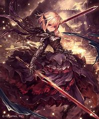
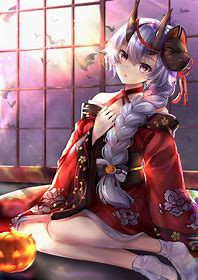
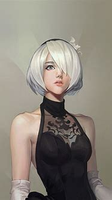
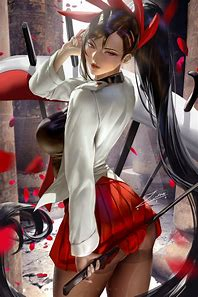
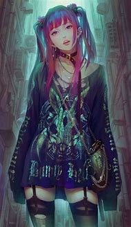
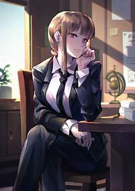
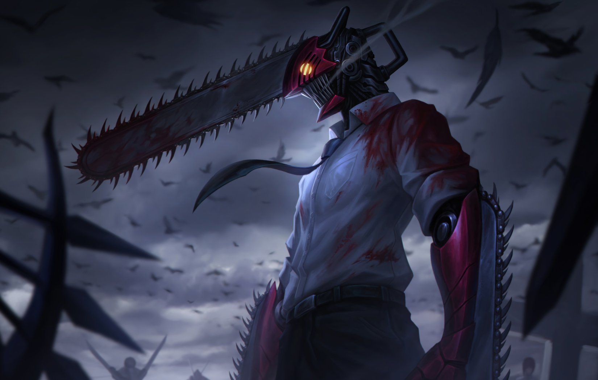
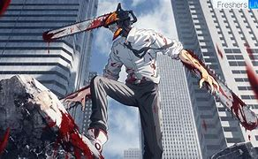

Galareyaga hush kelibsiz!





Rasmlar haqida ma'lumotlar
Makima is a beautiful woman who appears to be in her mid-twenties. Her hair colour is a light red, normally kept in a loose braid with bangs reaching just past her eyebrows and two longer side bangs that frame her face. Her eyes are yellow with multiple red rings within them. Her outfit consists of a white long-sleeved shirt, a black tie, black pants and brown shoes.

Rasm nomi: Makima="Chainsaw Man"
Rasm muallifi:Aki Hayakawa
Rasm chizilgan yili:2021
Sayt muallifi: Ilkhomjon Valiev

rasm muallifi:Ayi Hakawa
rasm sanasi:2021
rasm haqida qisqacha:Denji (Japanese: デンジ) is the protagonist of the manga series Chainsaw Man by Tatsuki Fujimoto. As a young boy, he inherits his father's debt from the yakuza upon his father's death. After meeting the Chainsaw Devil, Pochita, he becomes a Devil Hunter in an attempt to clear his debt. The yakuza kill him, and Pochita becomes his heart, setting a contract with Denji, who is to live his dreams of a normal life. After this, he can transform into the devil-human Hybrid known as Chainsaw Man (チェンソーマン, Chensō Man) by pulling a cord on his chest. As a Public Safety Devil Hunter, Denji fights alongside the members of Tokyo Special Division 4 in their battle to kill the Gun Devil, all the while pursuing his own personal interests

rasm muallifi:Ayi Hakawa
rasm sanasi:2021
rasm haqida qisqacha:Denji (Japanese: デンジ) is the protagonist of the manga series Chainsaw Man by Tatsuki Fujimoto. As a young boy, he inherits his father's debt from the yakuza upon his father's death. After meeting the Chainsaw Devil, Pochita, he becomes a Devil Hunter in an attempt to clear his debt. The yakuza kill him, and Pochita becomes his heart, setting a contract with Denji, who is to live his dreams of a normal life. After this, he can transform into the devil-human Hybrid known as Chainsaw Man (チェンソーマン, Chensō Man) by pulling a cord on his chest. As a Public Safety Devil Hunter, Denji fights alongside the members of Tokyo Special Division 4 in their battle to kill the Gun Devil, all the while pursuing his own personal interests
2022(C) Barcha huquqlar himoyalangan Saytni yaratdi:Ilkhom